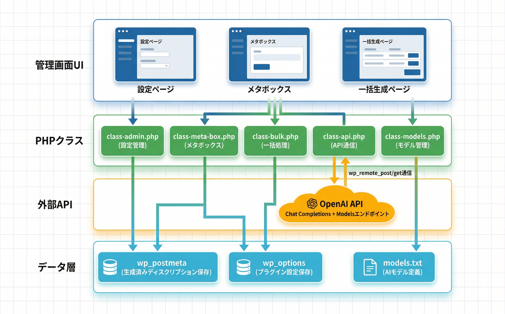

トラブルシューティング
よくある問題とその解決方法をまとめています。
ディスクリプションが生成されない
原因: OpenAI APIキーが未設定、または無効
1
設定画面でAPIキーが入力されているか確認
2
「APIキーテスト」ボタンで接続を確認
3
APIキーが sk- で始まる正しい形式か確認
4
OpenAIアカウントにクレジットが残っているか確認
APIキーが正しくてもクレジット残高がない場合はエラーになります。OpenAIダッシュボードで残高を確認してください。
生成結果が期待と異なる
原因: AIモデルや文字数設定が最適でない
1
より高性能なモデル（GPT-4.1）に変更して試す
2
文字数設定を調整する（短すぎると情報不足、長すぎると冗長に）
3
記事の本文が十分に書かれているか確認（AIは本文から内容を読み取る）
AIは本文の最初の約3000文字を参照します。記事の冒頭に重要な情報を含めることで、より適切なディスクリプションが生成されます。
一括生成が途中で止まる
原因: APIレート制限またはタイムアウト
1
しばらく待ってから再実行する（OpenAI APIにはレート制限がある）
2
一度に処理する件数を減らす（50件以下を推奨）
3
ブラウザの開発者ツールでエラーログを確認
処理中はブラウザのタブを閉じたり、ページを遷移しないでください。処理が中断されます。
メタボックスが投稿編集画面に表示されない
原因: 投稿タイプが有効化されていない
1
設定画面で「対応する投稿タイプ」を確認
2
対象の投稿タイプにチェックを入れて保存
3
ブロックエディタの場合、サイドバーの「投稿」タブ内にメタボックスが表示される
動作要件
| 項目 | 要件 |
|---|---|
| WordPress | 5.0以上 |
| PHP | 7.4以上 |
| 必要なAPI | OpenAI API（APIキー必須） |
| 対応ブラウザ | モダンブラウザ（Chrome, Firefox, Safari, Edge） |
技術仕様
- データ保存: wp_postmeta（生成済みディスクリプション）、wp_options（プラグイン設定）
- カスタムテーブル: なし
- 外部通信: OpenAI API（https://api.openai.com/v1/chat/completions, https://api.openai.com/v1/models）
- 通信方式: wp_remote_post / wp_remote_get（SSL有効、タイムアウト30秒）
- Cronイベント: なし
- メール送信: なし
- セキュリティ: nonce検証、capability チェック（manage_options）、入出力サニタイズ
プラグインのアーキテクチャ
